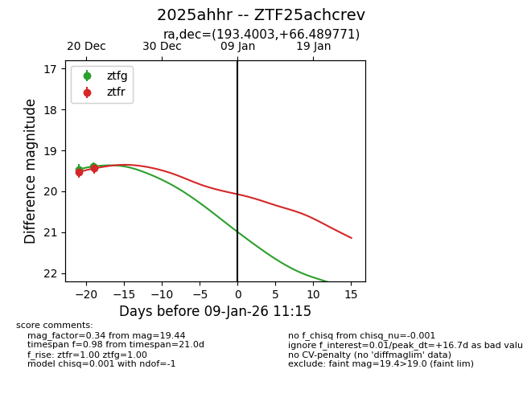
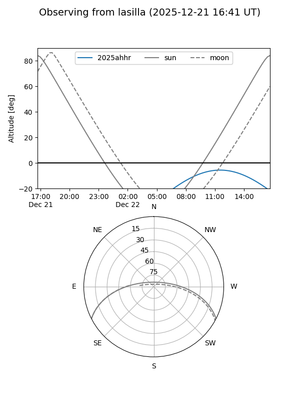
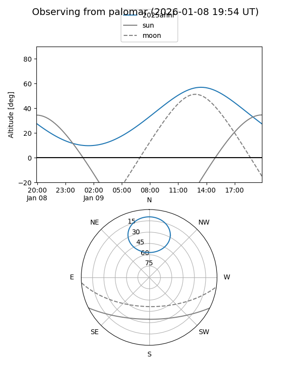
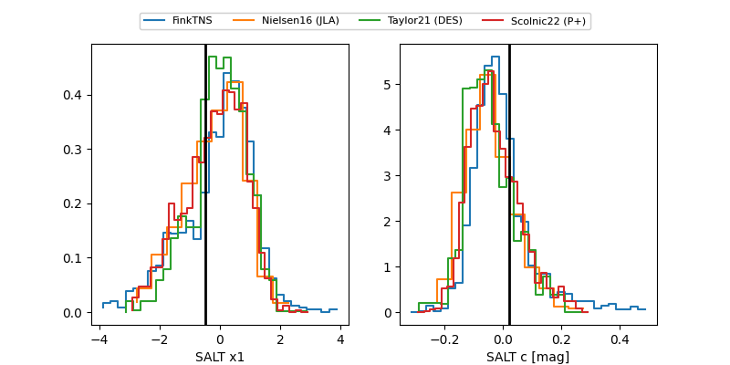

2025ahhr
Target 2025ahhr at 2025-12-21 11:57
Aliases and brokers:
FINK: fink-portal.org/ZTF25achcrev
Lasair: lasair-ztf.lsst.ac.uk/objects/ZTF25achcrev
ALeRCE: alerce.online/object/ZTF25achcrev
TNS: wis-tns.org/object/2025ahhr
YSE: ziggy.ucolick.org/yse/transient_detail/2025ahhr
alt names
ZTF25achcrev (ztf,fink_ztf)
2025ahhr (tns,yse)
Coordinates:
equatorial (ra, dec) = 193.4003,+66.48977
equatorial (HMS+DMS) = 12:53:36.07,+66:29:23.18
galactic (l, b) = (122.5918,+50.63705)
Flags:
Photometry:
last ztfg=19.39, ztfr=19.54
2 ztfg, 1 ztfr detections
Lightcurve

Visibility


Additional plots
